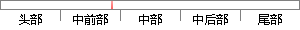

第四章，介绍在线问卷调查系统的软件架构设计，并且对架构中各个层次做详细的说明，然后列出系统的用例图，用例说明，时序图和网络拓扑图等设计。
片段位置图

相似结果|
相似片段 1：系统在性能、质量等非功能需求上进行了分析和说明。并依据“关键需求决定软件架构”的思想提出了舆情系统的总体体系架构，以及软件的网络拓扑，具体的分层设计将在下一章节进行详细介绍。4.1 引言在架构设计期间，关键需求决定了软件总体架构，其余需求则从侧面去验证架构的可行性，并且可以适当调整使架构设计趋于稳定。
|
※ 片段修改建议 ※
近似词参考：- 介绍：先容
- 系统：体系
- 设计：计划
- 并且：而且
- 层次：条理
- 详细：具体 细致
- 说明：申明 阐明
- 系统：体系
- 说明：申明 阐明
- 网络：收集
- 设计：计划
系统自动生成语句：第四章，先容在线问卷调查体系的软件架构计划，而且对架构中各个条理做具体的申明，然后列出体系的用例图，用例申明，时序图和收集拓扑图等计划。
注：本片段修改建议为系统自动生成，仅供参考。